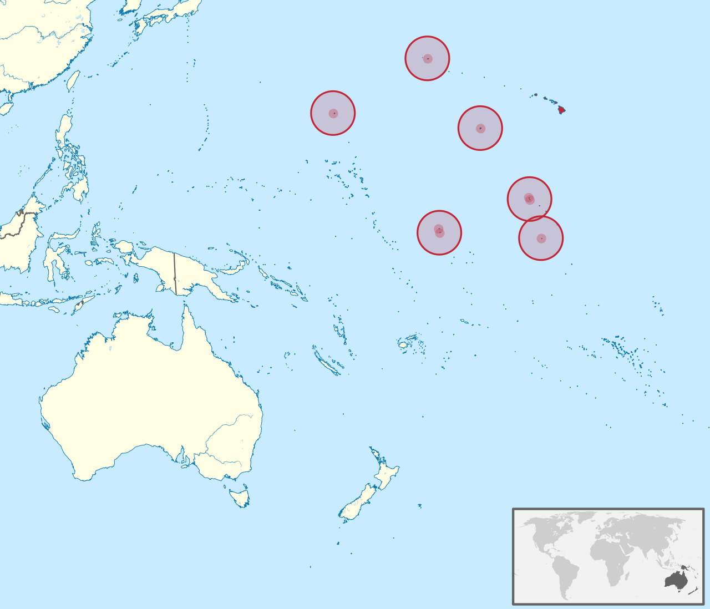

位置: 太平洋中部、ハワイの南西に約1,600キロメートルに位置します。
位置: ベーカー島の南東に位置し、ハワイの南西にあります。
位置: ハウランド島の南西に位置する無人島で、太平洋に浮かびます。
位置: ハワイの南西に約1,300キロメートルの場所に位置し、真珠湾からさらに南西にあります。
位置: ハワイの南西1,600キロメートルに位置します。
位置: ハワイの北西、本州の北西に約2,400キロメートルの場所に位置します。
位置:中部太平洋、ハワイの南西約1,800キロメートルに位置します。
位置:西太平洋、グアムの東約3,600キロメートルに位置します。
位置:カリブ海の西端位置します。
